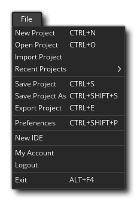

El menú de archivos es donde puede elegir cambiar, guardar o importar proyectos, así como configurar las preferencias de GameMaker Studio 2 IDE. Las opciones disponibles son:
- Nuevo proyecto: esto es para crear un nuevo proyecto desde cero en GameMaker Studio 2. Se abrirá el diálogo "Guardar" y le pedirá que elija una ubicación para guardar el nuevo proyecto. Una vez que le hayas dado un nombre al proyecto y una ubicación para guardarlo, se te llevará a un nuevo espacio de trabajo en blanco para comenzar a trabajar en él. Los archivos de proyecto se guardan con el *.yyp extensión de archivo.
- Abrir proyecto: esto abrirá el explorador de archivos GameMaker Studio 2 para que seleccione un archivo creado previamente. *.yyp Proyecto de archivo para cargar.
- Importar proyecto: si tiene un proyecto hecho con el software GameMaker: Studio 1.4 de YoYo Games, puede seleccionar esta opción para importar *.gmx o la *.gmz expediente.
NOTA: Para importar un proyecto anterior de GameMaker en GameMaker Studio 2, debe haber sido creado con la versión 1.4, e incluso entonces puede que no funcione directamente en la importación. Una gran cantidad de cosas son diferentes entre GameMaker Studio 2 y GameMaker: Studio 1.4, por lo que sus proyectos más antiguos pueden necesitar algunos ajustes para que funcionen. Consulte el artículo Portando A GM: S 1.4 Game To GameMaker Studio 2 en la Base de conocimientos de YoYo Games y la sección del manual que cubre Funciones obsoletas y secuencias de comandos de compatibilidad.¡IMPORTANTE! La importación de proyectos antiguos y proyectos YYZ no está disponible con la licencia de prueba del producto.
- Proyectos recientes: puede utilizar esta opción para ver proyectos utilizados recientemente. Al seleccionarlo se volverá a abrir la página de inicio (si la hubiera cerrado) y puede seleccionar un proyecto recientemente utilizado de la lista que se encuentra allí.
- Guardar proyecto: esto guardará su juego en la misma ubicación que definió cuando creó el proyecto (o desde donde lo abrió).
- Guardar proyecto como: igual que arriba, solo usted especifica la ubicación y el nuevo nombre del proyecto.
- Exportar Proyecto - Esto exportará el proyecto como un solo *.yyz expediente. Muy útil para enviar copias a personas o para guardar copias de seguridad.
¡IMPORTANTE! La exportación de proyectos YYZ no está disponible con la licencia de prueba del producto.- Preferencias: al seleccionar esto, accederás a la ventana de Preferencias, donde puedes configurar la apariencia y el estilo de GameMaker Studio 2.
- Nuevo IDE: cuando seleccione esta opción, se abrirá una nueva instancia del IDE para su uso (se abrirá en la página de inicio).
- Mi cuenta: esta opción abrirá su navegador web predeterminado y lo llevará a la página de su cuenta YoYo.
- Cerrar sesión: al seleccionar esto, se desconectará de GameMaker Studio 2. Deberá volver a iniciar sesión con la misma licencia (o cualquier otra) para poder usar el producto más adelante.
¡IMPORTANTE! Si ha estado usando una licencia de prueba para GameMaker Studio 2 y luego compra una de las otras licencias (de escritorio, móvil, UWP, web o consola), es posible que deba cerrar la sesión del IDE y luego reiniciar GameMaker Studio 2 y volver a iniciar sesión. de nuevo para asegurarse de que la nueva licencia se aplica correctamente (aunque esto debería suceder automáticamente).- Salir: sale de GameMaker Studio 2 al escritorio.